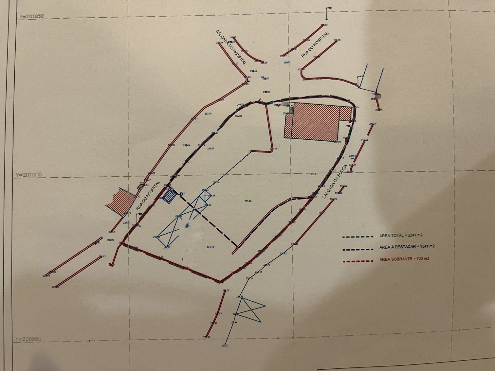

Disponível
Fotografia aérea · prédio a claro, lote a tracejado (aproximado)
Disponível
Fotografia aérea · prédio a claro, lote a tracejado (aproximado)
Lote urbano · Escudeiros · Braga
Lote plano para moradia isolada
700 m² na Rua do Hospital, numa zona de moradias a sul de Braga. Solo urbano no PDM revisto em 2026, sem RAN nem REN.
700 m²Área do lote
PlanoCotas entre 234 e 237 m
1Moradia isolada
Preço99 000 €
Ref. ESC-700
 Ref. ESC-700 · 02/05
Ref. ESC-700 · 02/05
O terreno
Frente para a Rua do Hospital, numa zona de moradias
O lote é a parte sul de um prédio maior, entre a Rua do Hospital e a Calçada da Bouça, e resulta de uma operação de destaque. A envolvente é de moradias de dois pisos, com acesso rápido ao centro de Braga.
| Localização | Rua do Hospital, Escudeiros e Penso, Braga |
| Área do lote | 700 m² (de um prédio com 2 241 m²) |
| Classificação no PDM | Solo urbano — Espaço Urbano de Baixa Densidade |
| Condicionantes | Sem RAN nem REN |
| Acesso | Frente para a Rua do Hospital |
| Topografia | Praticamente plano |
Áreas da planta de destaque. A certidão de destaque e o registo do lote são concluídos antes da escritura.
Ref. ESC-700 · 03/05
Potencial construtivo
Espaço para uma moradia isolada com jardim

Lote à venda · 700 m²Planta de destaque: prédio com 2 241 m², área a destacar com 1 541 m² (casa existente) e lote de 700 m².
UsosHabitação e outros usos compatíveis
AlturaA dominante da rua (moradias de 2 pisos)
Sem referência na ruaÍndice 0,60 · 9 m · 3 pisos
Impermeabilização máxima60 % do lote
Seguindo a altura das moradias vizinhas, o lote recebe uma moradia isolada de dois pisos, com cerca de 250 a 280 m² de construção, garagem e jardim. Por ser plano, poupa em muros de suporte e movimentação de terras.
PDM de Braga, 3.ª revisão (Aviso 8551/2026/2), art. 66.º e 67.º. Os parâmetros finais dependem da apreciação municipal; recomendamos um Pedido de Informação Prévia.
Ref. ESC-700 · 04/05
Mercado
Construir em Braga, onde a procura continua
Braga é um dos mercados mais fortes do Norte. O preço mediano da habitação ronda os 2 090 €/m² (INE), e as moradias T3 novas nos arredores anunciam-se entre 1 770 e 2 400 €/m².
| Referência | | Valor |
|---|
| Preço mediano da habitação, Braga | INE | 2 090 €/m² |
| Moradias T3 novas nos arredores | anúncios | 1 770–2 400 €/m² |
| Lotes para moradia em Escudeiros | anúncios | 470–600 m² |
| Este lote | plano | 700 m² |
Por m² de construção≈ 370 €Para uma moradia de cerca de 270 m².
Área700 m²Maior do que os lotes habituais da zona.
Preço99 000 €Lote plano, pronto a projetar.
Valores de referência: INE e anúncios públicos, novembro de 2026.
Ref. ESC-700 · 05/05
Próximos passos
Do primeiro contacto à escritura
01Visita e documentaçãoVisita ao local e entrega da caderneta predial, da certidão permanente e da planta do prédio.
02Pedido de Informação PréviaRecomendamos pedir à Câmara um PIP antes da compra: confirma por escrito o que pode construir.
03Contrato-promessaCPCV com sinal, prazos e condições acordadas entre as partes.
04Escritura e registoEscritura, pagamento de IMT e Imposto do Selo e registo na Conservatória.
Marque a sua visita
+351 913 440 800 · paineltematico@gmail.com
Documento informativo, sem valor contratual. Áreas e parâmetros urbanísticos indicativos, a confirmar junto da Câmara Municipal de Braga e por levantamento topográfico. Painel Temático, Lda · Braga.